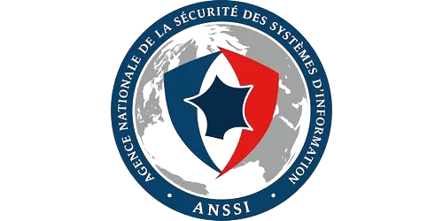

Certifications
Diplômes &
certifications.

Cisco — Introduction to Networks
Adressage IP, modèle OSI, routage et commutation réseau.

ANSSI — Cybersécurité
Bonnes pratiques, mots de passe, risques numériques, RGPD.
Fortinet — NSE 1 & 2
Reconnaissance des attaques : phishing, ransomware, politiques d'accès.